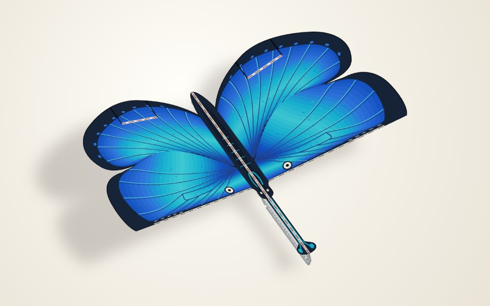

Вырезать и сложить
Махаон
Найди два длинных хвостика за жёлтыми крыльями. Регулируемые язычки расположены ближе к корпусу. Длинные хвостики входят в контур. Если загнуть один из небольших язычков ближе к корпусу, воздух будет по-разному обтекать крылья. Запиши отдельно начальный крен и место посадки.
- Размах крыльев
- 176 mm
- Подъём крыла над горизонталью
- 10 °
- Высота кончиков
- 15 mm

Иллюстрация движения
Что понадобится
Бумага 120 г/м², ножницы, линейка и две скрепки по 33 мм.
Напечатай шаблон (K2)
Печатай в масштабе 100% («Фактический размер») и проверь линейкой отметку 50 мм.
Проверь в полёте
Сначала выровняй оба язычка. Для второй серии немного подними один. С какой стороны окажется больше первых касаний?
Другие варианты сгиба
Крылья с язычками (W1)
Складной корпус (K1)
Посмотреть другие модели
-

Монарх
Вырезать и сложить
-

Голубой морфо
Вырезать и сложить